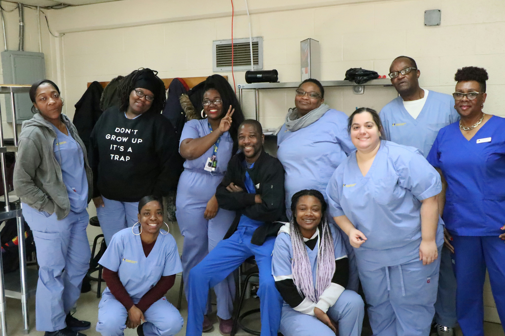
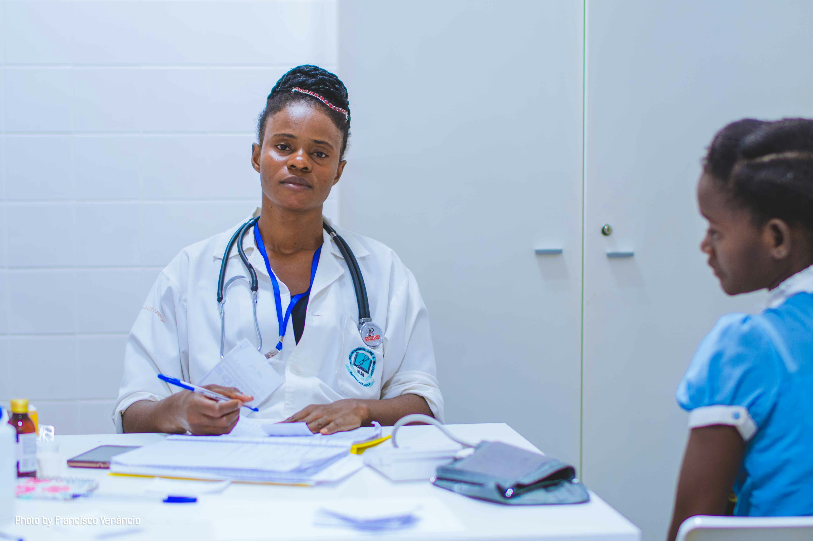
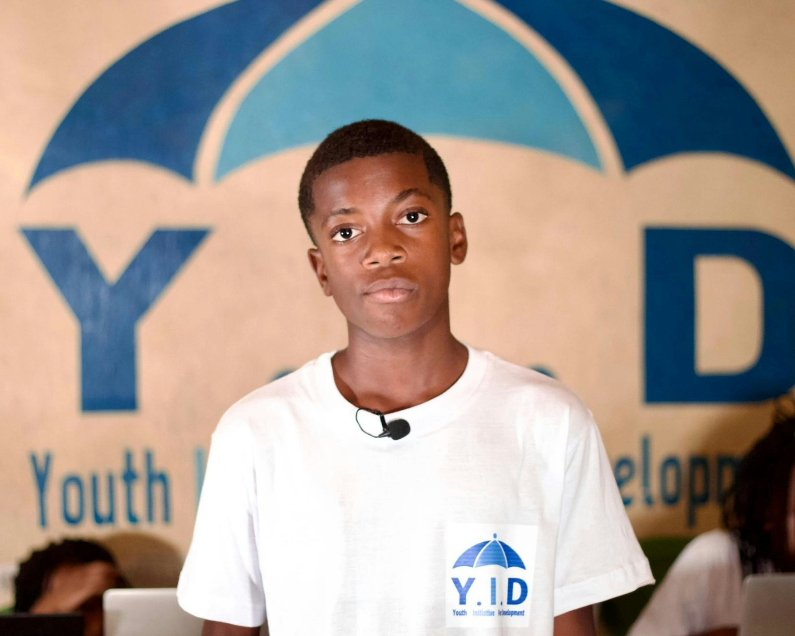

About HealthConnect SA
Home / About Us
Our Story
HealthConnect SA was founded in 2020 by a group of nursing students at the University of Johannesburg. They noticed that many rural communities lacked access to basic health information and decided to start a community outreach programme.
What began as a small initiative distributing health pamphlets in Diepsloot has grown into a registered NPO providing health education and connecting communities to local clinics across Gauteng and Limpopo.
Today, we have reached over 5,000 community members, partnered with 15 local clinics, and trained more than 50 volunteers. Our workshops cover topics like nutrition, hygiene, disease prevention, and mental health.

Our team at a community health outreach event
Our Mission
To improve community health outcomes by providing accessible health information and connecting people to healthcare services.
Our Vision
A South Africa where every community has access to the health information and services they need to live healthy lives.
Our Core Values
Accessibility
We believe health information should be available to everyone, regardless of where they live.
Education
We are committed to empowering communities through knowledge.
Community
We work with local leaders and organisations to create sustainable change.
Integrity
We are accountable to our donors, volunteers, and the communities we serve.
Meet Our Team

Dr. Thandi Mokoena
Founder and Director
Dr. Mokoena is a qualified nurse with 10 years of experience in community health. She leads the strategic direction of HealthConnect SA.

Sipho Ndlovu
Programmes Coordinator
Sipho manages our health workshops, clinic partnerships, and youth programmes.
Naledi Khumalo
Volunteer and Community Manager
Naledi recruits, trains, and supports our network of volunteers across Gauteng and Limpopo.